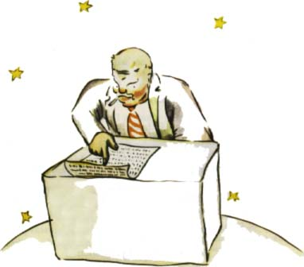

Dobrý den," pozdravil ho malý princ. "Vyhasla vám cigareta."
"Tøi a dvì je pìt. Pìt a sedm dvanáct. Dvanáct a tøi patnáct. Dobrý den. Patnáct a sedm dvacet dva. Dvacet dva a ¹est dvacet osm. Nemám èas ji znovu zapálit. Dvacet pìt a ¹est tøicet jedna. Uf! Dìlá to tedy pìt set jeden milión ¹est set dvacet dva tisíce sedm set tøicet jedna."
"Pìt set miliónù èeho?"
"Co¾e? Ty jsi tu je¹tì? Pìt set miliónù... u¾ nevím èeho... mám tolik práce! Já jsem vá¾ný èlovìk, nebavím se hloupostmi! Dvì a pìt je sedm..."
"Èeho pìt set miliónù?" opakoval malý princ, proto¾e se nikdy v ¾ivotì nevzdal otázky, kterou jednou dal.
Byznysmen zvedl hlavu:
"Za celých ètyøiapadesát let, co bydlím na této planetì, jsem byl vyru¹en jen tøikrát. Poprvé pøed dvaadvaceti lety chroustem, který spadl bùhvíodkud. Hroznì hluèel a já jsem se ètyøikrát spletl v seèítání. Podruhé to bylo pøed jedenácti lety, mìl jsem tehdy revmatický záchvat. Chybí mi pohyb. Nemám èas se jen tak potloukat. Jsem pøece vá¾ný èlovìk. A potøetí... zrovna teï. Øíkal jsem tedy pìt set miliónù..."
"Miliónù èeho?"
Byznysmen pochopil, ¾e nemá ¾ádnou ¹anci na klid:
Miliónù hvìzdièek, které vidíme nìkdy na obloze."
"Much?"
"Ale ne, vìcièek, které se tøpytí."
"Vèel?"
"Ale ne. Zlatých vìcièek, o kterých sní leno¹i. Jenom¾e já jsem vá¾ný èlovìk! Já nemám èas na snìní."
"Ach ták, hvìzd?"
"Ano, ano, hvìzd."
"A co dìlá¹ s pìti sty milióny hvìzd?"
"Pìt set jeden milión ¹est set dvacet dva tisíce sedm set tøicet jedna. Já jsem vá¾ný èlovìk, já jsem pøesný."
"A co s tìmi hvìzdami dìlá¹?"
"Co s nimi dìlám?"
"Ano."
"Nic. Patøí mi."
"Tobì patøí hvìzdy?"
"Ano."
"Ale vidìl jsem u¾ krále, který..."
"Králové nejsou majiteli. Králové vládnou. A v tom je velký rozdíl."
"A co ti to pomù¾e, ¾e má¹ hvìzdy?"
"Jsem bohatý."
"A co ti to pomù¾e, ¾e jsi bohatý?"
"Mohu si nakoupit jiné hvìzdy, pokud nìjaké objeví."
"Tenhle èlovìk rozumuje trochu jako ten mùj opilec, øekl si v duchu malý princ.
Pøesto se ptal dál:
"Jak vám mohou patøit hvìzdy?"
"A komu patøí?" odsekl mrzutì byznysmen.
"To nevím. Nikomu."
"Tak tedy patøí mì, nebo» já jsem na nì myslel první."
"A to staèí?"
"Ov¹em. Kdy¾ najde¹ diamant, který nikomu nepatøí, je tvùj. Kdy¾ najde¹ ostrov, který nikomu nepatøí, je tvùj. Kdy¾ má¹ první nìjaký nápad, dá¹ si ho patentovat: je tvùj. A mnì patøí hvìzdy, proto¾e nikdy nikoho pøede mnou nenapadlo, ¾e by mu mohly patøit."
"To je pravda," øekl malý princ. "A co s nimi dìlá¹?"
"Spravuji je. Poèítám a pøepoèítávám je," vysvìtloval byznysmen. "Není to zrovna snadné. Ale já jsem vá¾ný èlovìk!"
Malému princi to je¹tì nestaèilo:
"Patøí-li vám hedvábný ¹átek, mohu si ho dát na krk a odnést si ho. Patøí-li mi kvìtina, mohu ji utrhnout a odnést. Ale ty nemù¾e¹ utrhnout hvìzdy."
"Ne, ov¹em mohu je dát do banky."
"Co to znamená?"
"To znamená, ¾e napí¹u na papírek poèet svých hvìzd. A potom zamknu ten papír do zásuvky."
"A nic víc?"
"To staèí!"
To je zábavné, pomyslil si malý princ. Je to dost poetické, ale ne moc seriózní.
Malý princ mìl o vá¾ných vìcech pøedstavy hodnì odli¹né od pøedstav, jaké mají dospìlí.
"Já mám kvìtinu," øekl je¹tì, "a ka¾dý den ji zalévám. Mám tøi sopky a ty vymetám ka¾dý týden. Vymetám toti¾ i tu vyhaslou. Èlovìk nikdy neví. Pro mé sopky i pro mou kvìtinu je u¾iteèné, ¾e mi patøí. Ale ty nejsi hvìzdám u¾iteèný..."
Byznysmen otevøel ústa pøekvapením, nevìdìl v¹ak, co odpovìdìt. A malý princ zmizel.
Dospìlí jsou rozhodnì podivní, øekl si jen v duchu cestou.